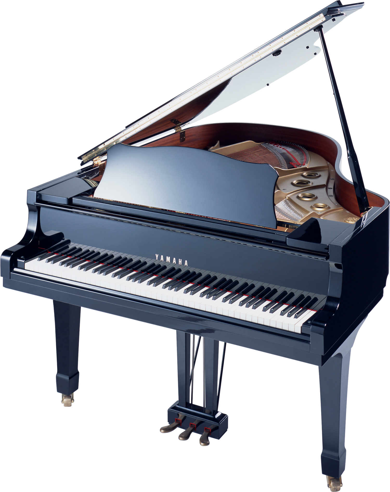

Обучение в MySchool
В студии "MySchool" Вы можете не только овладеть мастерством вокала, гитары, ударных и т.д. , но и выступить на лучших городских площадках Минска, показав свой талант тысячам людей. Наша студия проводит регулярные концерты с участием преподавателей и их учеников. Эти выступления навсегда останутся в вашей памяти, ведь мы дарим клипы с концерта каждому ученику;)
В музыкальной студии "MySchool" существует несколько форм обучения. Самых одаренных и перспективных учеников мы готовы взять в студию на бюджетное отделение. Так же возможен переход с платного на бюджетное отделение, если ученик делает успехи.
У нас в студии мы создаем музыкальные группы и вокальные ансамбли, в которых участвуют ученики студии "MySchool". И все они не только играют и поют в стенах студии, но и показывают свое творчество на крупнейших концертных площадках Минска.
В процессе обучения все ученики постепенно нарабатывают репертуар из самых популярных и известных произведений, которые могут записать, даже не выходя из кабинета. Ведь в каждом кабинете установлено новейшее современное оборудование для звукозаписи. При окончании обучения каждый выпускник получает записи лучших своих работ и диплом об окончании музыкальной студии "MySchool".
Если со временем музыка овладеет вами настолько, что Вы захотите посвятить ей всю жизнь, то преподаватели нашей студии с радостью подготовят Вас к поступлению в музыкальное училище.
При записи в нашу студию, придя на первое занятие, вы получаете подарочную папку со всеми необходимыми вещами для обучения, в которую входят ручка, карандаш, тетрадь и многое другое.